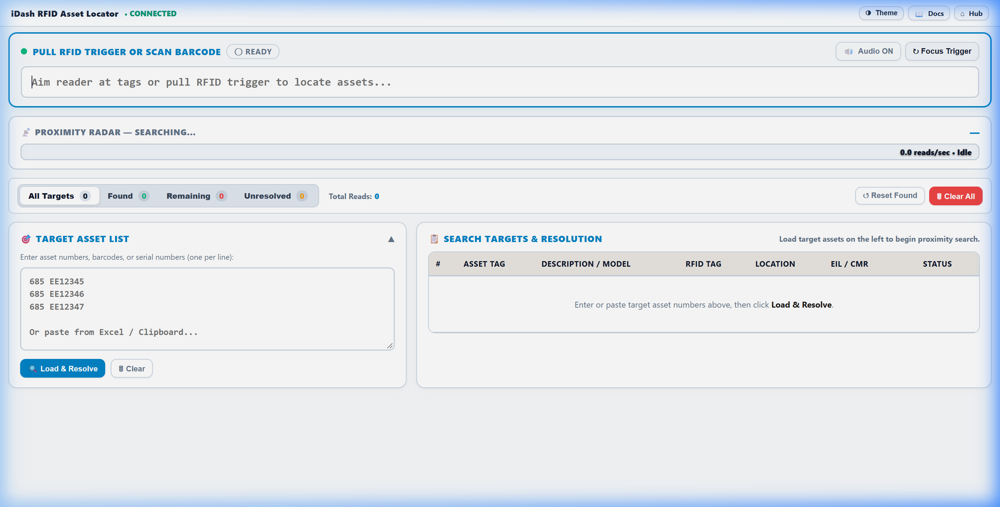
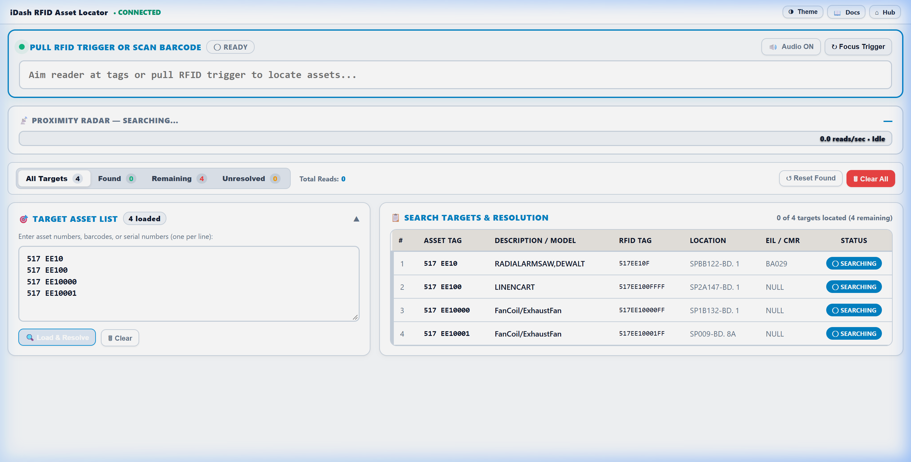
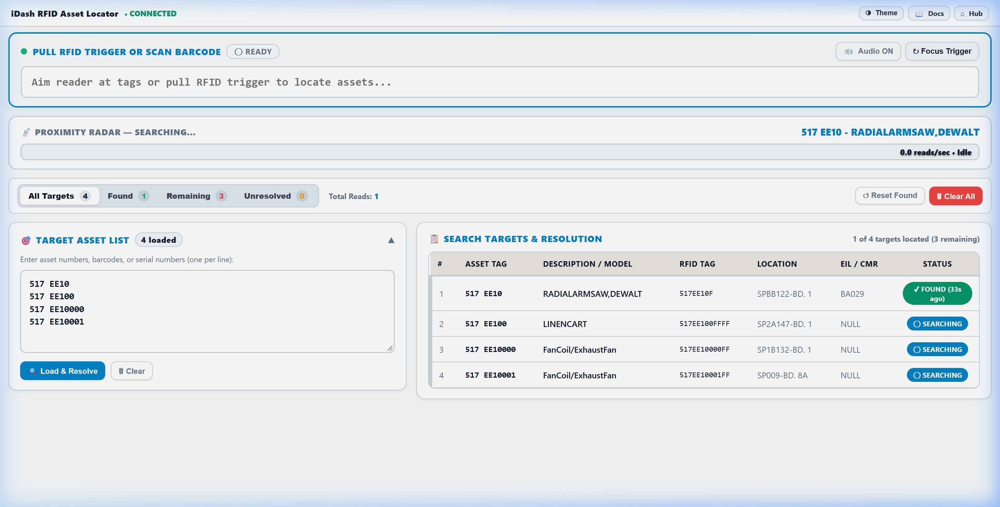

The RFID Asset Locator (va_rfid_locator.aspx)
is a web-based, real-time search tool in iDash that turns your mobile computer or RFID sled into an
audio-visual Geiger proximity counter. As you walk toward a target asset, the proximity meter
fills with color and synthesized audio beeps accelerate in frequency and pitch, allowing you to pinpoint
the exact physical location of missing, misplaced, or scheduled items.
ⓘ Supported Hardware & Environments
• Mobile Handhelds: Zebra TC53 / TC58 with RFD40, RFD90, or RFD8500 RFID sled (using DataWedge keystroke output).
• USB Desktop Readers: USB RFID antennas / cradles connected via direct WebSerial API.
• Universal Browser Access: Runs entirely in Microsoft Edge or Chrome with zero mobile client installation required.
When you open the RFID Asset Locator from the iDash Hub, the application presents a dual-panel
workspace designed for high-speed field operations:

Figure 1: RFID Asset Locator initial workspace showing status bar, Geiger meter, scanner engine, and two-panel grid.
Component
Function
Geiger Proximity Meter
Displays the active target asset name, description, dynamic percentage bar (0%–100%), and status indicator.
Continuous Scan Engine
High-speed keystroke listener field (#raw) with pulsing green focus indicator. Maintains focus automatically so every RFID read registers instantly.
Target Asset List (Left)
Drawer for entering or pasting Asset Numbers (EE#), Barcodes, Serial Numbers, or Tag EPCs with one-click database resolution.
Radar & Results Grid (Right)
Real-time table listing all loaded targets, expected EPCs, recorded locations, and live discovery status.
Filter & Count Toolbar
Filter tabs for All, Found, Searching, and Unresolved with total tag read counters and session reset actions.
Audio Controls
Top navigation button (🔊 Sound On / 🔇 Sound Off) to enable or mute Web Audio Geiger feedback.
2. Step 1: Loading & Resolving Target Assets
You can load a single asset or an entire batch of assets (e.g., from an ENNX discrepancy list or maintenance schedule)
into the search list.
1
Enter Target Identifiers: In the Target Asset List panel on the left, type or paste
one or more asset numbers, barcodes, or serial numbers (one per line). Example: 517 EE10 517 EE100 517 EE10000 517 EE10001
2
Click "Load & Resolve": Tap the 🔍 Load & Resolve button.
iDash immediately queries the database to cross-reference each identifier against the asset master.

Figure 2: Target 517 assets successfully resolved from local database with description (RADIALARMSAW,DEWALT, LINENCART, FanCoil/ExhaustFan), RFID tag EPC, recorded location, and initial Searching status.
ⓘ Automatic Target Resolution
• Found in Database: Populates the Asset Tag, Description / Model, RFID Tag EPC, Recorded Location, and EIL / CMR, with status set to Searching.
• Unresolved Asset: If an identifier cannot be found in the database, it is flagged as Unresolved so you can verify the number.
• Deep-Link URL Pre-loading: You can launch the locator with pre-loaded assets directly by appending ?assets=517%20EE10,517%20EE100 to the URL.
3. Step 2: Hardware Setup & Scanner Focus
The locator listens continuously for tag reads through its integrated scan engine without requiring manual form submits.
1
Verify Scanner Focus: Ensure the top input box shows a pulsing green indicator (SCANNER READY).
If the input loses focus (turns amber), simply tap anywhere on the screen or press the trigger to restore focus.
2
Zebra Mobile Handheld (TC53 / TC58 + Sled): Ensure your Zebra DataWedge profile is configured for
keystroke output with an Enter terminator. Squeezing the sled trigger will stream RFID reads directly into iDash.
3
USB Desktop Reader: If using a USB RFID antenna or cradle reader, tap 🔌 Connect USB Reader
in the top status bar. Select your serial port in the browser prompt to stream reads via WebSerial API.
4. Step 3: Conducting the Search & Reading the Geiger Meter
With your target assets loaded and scanner active, walk through the facility holding the RFID trigger.
1
Sweep the Area: Hold the RFID trigger and sweep the handheld in wide, slow arcs across rooms,
shelves, equipment bays, or storage areas.
2
Watch the Proximity Meter: As soon as the reader detects a tag matching any loaded target,
the Geiger Proximity Meter activates and locks onto the asset.

Figure 3: Active target lock on asset 517 EE10 (RADIALARMSAW,DEWALT) in Light Mode — green proximity bar, audio pulse indicator, and Found status badge.
3
Follow the Signal Rise:
• The progress bar fills and changes color from gray → blue → green → peak.
• Synthesized audio beeps become faster and higher-pitched as read density increases.
• Move in the direction where the signal percentage increases.
✅ Asset Found! When the signal bar reaches 90%–100% and audio pulses are rapid,
the asset is within 1 to 2 feet of your antenna. Check behind equipment, inside closets, or under beds.
5. Step 4: Locking onto a Specific Target Asset
When searching for multiple assets simultaneously, multiple tags might register in the same vicinity.
iDash allows you to focus exclusively on one item:
Automatic Tracking: By default, the Geiger meter highlights the most recently detected target asset.
Click-to-Lock Target: Click any asset row in the Search Targets & Resolution table.
The Geiger meter immediately locks onto that specific asset, ignoring reads from other items until you locate it.
Live Row Flashing: Whenever a matching tag is read in real time, its corresponding table row
flashes with a bright green highlight.
Discovery Timestamps: Located assets display when they were found (e.g., "just now", "18s ago")
along with the cumulative tag read count.
6. Signal Strength & Audio Beep Reference
The Geiger meter calculates proximity using a combination of tag read density and signal timing decay.
Use this reference to gauge your physical distance:
Live Proximity Decay Scale
0% (Idle)
Silent — tag out of range
1%–35%
Low-pitch, slow beeping (10–20 ft)
36%–75%
Medium-pitch, steady beeps (4–8 ft)
76%–100%
Rapid high-pitch pulse (under 2 ft)
Percentage
Bar Color
Audio Feedback
Estimated Distance & Action
0%
Gray / Empty
Silent
Out of range. Move to adjacent corridors or rooms.
1%–35%
Light Blue
Slow, low-pitched beeps
Perimeter detection (10–25 ft). Asset is in this room or adjacent wall.
36%–75%
Emerald Green
Medium-tempo, higher tone
Closing in (3–8 ft). Narrow search to specific corner, bay, or cart.
⚠ Signal Decay Feature: When you stop scanning or walk away from the asset, the proximity
bar naturally decays downward toward 0%. This decay provides immediate physical feedback on whether you are walking
toward or away from the asset.
7. Field Search Tactics & Physical Pinpointing
Move at a Normal Walking Pace: RFID sweeps require milliseconds to respond. Moving too fast
can cause you to walk past an item before the initial ping registers.
Check Vertical Levels: Assets are frequently stored high on top shelves or under patient beds.
Angle the reader up toward the ceiling and down toward the floor during sweeps.
Beware of Metal Reflections: Metal walls, stainless steel carts, and aluminum lockers reflect
RFID signals. If signal strength fluctuates erratically, step back and approach the area from a 90-degree angle.
Through-Wall Reads: Ultra-High Frequency (UHF) RFID easily penetrates drywall and acoustic ceiling
tiles. If a signal maxes out against an empty wall, the asset is almost certainly in the room directly behind it.
Use Audio Feedback: Keep audio enabled (🔊 Sound On) whenever feasible.
Hearing the pitch change allows you to keep your eyes focused on equipment rather than staring constantly at the screen.
8. Session Management & Re-Searching
Once an asset search is completed, use the action toolbar to transition to your next task:
Filter by Status: Click the Found tab to view only confirmed items,
or Searching to see remaining unlocated assets.
Reset Found Status: Click ↺ Reset Found to clear detection timestamps and re-verify
the same batch of assets without re-entering the numbers.
Clear All Targets: Click 🗑 Clear All to purge the table and load a new list.